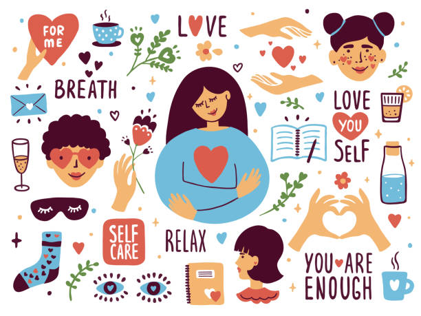

The Joy of Slow Living

"Slow living isn't about determining how little we can live with – it's about working out what we simply can't live without."
How slow living can be joyful
Savoring the moment
Slow living encourages you to savor each moment and find joy in simplicity.
Creating lasting memories
Slow living allows you to create lasting memories with loved ones through small, meaningful gatherings.
Being present
Slow living helps you become more present and mindful in your everyday life.
Appreciating life
Slow living helps you appreciate life more fully by focusing on what truly matters.
Transportation: AI will help with traffic management and autonomous vehicles.
Home care: AI will help with elderly care and other household tasks.
How to practice slow living
Choose quality over quantity.
Let go of excess that clutters your space and mind.
Foster deep connections through small, meaningful gatherings.
Prioritize your physical wellbeing
Practice mindfulness
Make deliberate choices that align with your values.
Give yourself permission to enjoy life at your own pace.